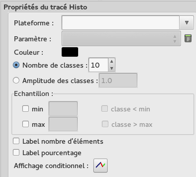

Configurer un tracé Histo

Plateforme :
le menu déroulant de sélection de la plateforme propose un mode de sélection avancé. Pour cela, entrer la ou les premières lettres de la plateforme pour n'avoir que les plateformes correspondantes proposées, comme l'illustre l'image ci-dessous :
Paramètre : le menu déroulant de sélection d'un paramètre se présente en cascade à 3 niveaux :
Noter : lorsque la liste des paramètres est très longue, on peut utiliser les touches de défilement des pages pour facilter la recherche.

Calculette :  cf § Opération sur les données.
cf § Opération sur les données.
Couleur :
cliquer sur le bouton pour ouvrir la boîte de sélection des couleurs :

Sélectionner une couleur avec la roue : choisir la teinte en faisant tourner la roue ou en cliquant sur le cercle. Choisir ensuite la couleur en cliquant dans le triangle ou en déplacant le curseur rond à l'intérieur du triangle.
Sélectionner une couleur avec la palette : la palette propose un choix prédéfini de couleurs. Les 5 premières sont fixes. Les autres couleurs correspondent aux couleurs déjà utilisées dans le document, ce qui permet de conserver les mêmes couleurs d'un graphique à l'autre si on le souhaite.
Les infos-bulles sont également disponibles dans cette boîte.
Nombre de classes : Nombre de classes de l'échantillon : lorque ce nombre est positionné, le choix de l'amplitude des classes n'est plus disponible.
Amplitude des classes : Taille des classes de l'échantillon : lorque ce nombre est positionné, le choix du nombre de classes n'est plus disponible.
Echantillon : Vista offre la possibilité de seuiller l'échantillon de données en précisant la valeur minimale et la valeur maximale. On peut également demander de créer une classe contenant les valeurs qui sortent de l'échantillon (classe<min et/ou classe>max).
Label nombre d'éléments : Affiche le nombre d'éléments de chaque classe sur l'axe des abscisses.
Label pourcentage : Affiche le pourcentage d'éléments de chaque classe sur l'axe des abscisses.
Affichage conditionnel : cf § Affichage conditionnel.